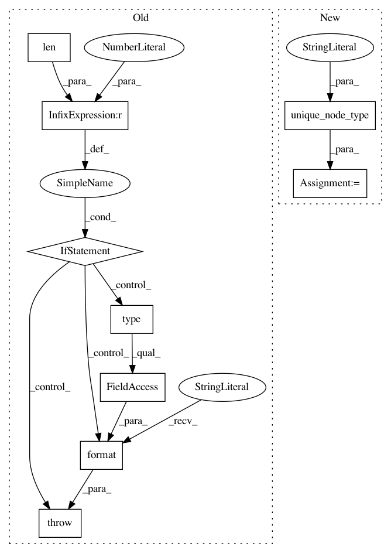

a20dfe09b9994fbb898fcf1dd2a87fe30777f964,stellargraph/mapper/full_batch_generators.py,FullBatchGenerator,__init__,#FullBatchGenerator#Any#Any#Any#Any#Any#Any#Any#,56
Before Change
// Check that there is only a single node type for GAT or GCN
node_types = list(G.node_types)
if len(node_types) > 1:
raise TypeError(
"{}: node generator requires graph with single node type; "
"a graph with multiple node types is passed. Stopping.".format(
type(self).__name__
)
)
// Create sparse adjacency matrix:
// Use the node orderings the same as in the graph features
self.node_list = G.nodes()
self.Aadj = G.to_adjacency_matrix()
// Power-user feature: make the generator yield dense adjacency matrix instead
After Change
G.check_graph_for_ml()
// Check that there is only a single node type for GAT or GCN
_ = G.unique_node_type(
"G: expected a graph with a single node type, found a graph with node types: %(found)s"
)
// Create sparse adjacency matrix:
// Use the node orderings the same as in the graph features
self.node_list = G.nodes()
In pattern: SUPERPATTERN
Frequency: 3
Non-data size: 9
Instances
Project Name: stellargraph/stellargraph
Commit Name: a20dfe09b9994fbb898fcf1dd2a87fe30777f964
Time: 2020-04-27
Author: Huon.Wilson@data61.csiro.au
File Name: stellargraph/mapper/full_batch_generators.py
Class Name: FullBatchGenerator
Method Name: __init__
Project Name: stellargraph/stellargraph
Commit Name: a20dfe09b9994fbb898fcf1dd2a87fe30777f964
Time: 2020-04-27
Author: Huon.Wilson@data61.csiro.au
File Name: stellargraph/mapper/graphwave_generator.py
Class Name: GraphWaveGenerator
Method Name: __init__
Project Name: stellargraph/stellargraph
Commit Name: a20dfe09b9994fbb898fcf1dd2a87fe30777f964
Time: 2020-04-27
Author: Huon.Wilson@data61.csiro.au
File Name: stellargraph/mapper/mini_batch_node_generators.py
Class Name: ClusterNodeGenerator
Method Name: __init__